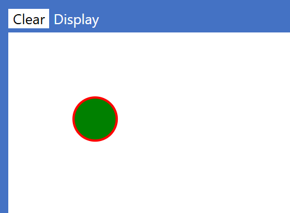

Elan Library Reference
Library constants
| name | Type | value |
|---|
| openBrace | String | { |
| closeBrace | String | } |
| quotes | String | " |
Library colours
| colour | | decimal | decimal
| hexadecimal |
|---|
| name | | integer | R G B | 0xrrggbb |
|---|
| black | ◼ | 0 | 0 0 0 | 0x000000 |
| white | ◼ | 16777215 | 255 255 255 | 0xffffff |
| red | ◼ | 16711680 | 255 0 0 | 0xff0000 |
| green | ◼ | 32768 | 0 128 0 | 0x008000 |
| blue | ◼ | 255 | 0 0 255 | 0x0000ff |
| yellow | ◼ | 16776960 | 255 255 0 | 0xffff00 |
| brown | ◼ | 10824234 | 165 42 42 | 0xa52a2a |
| grey | ◼ | 8421504 | 128 128 128 | 0x808080 |
Library functions
Standalone library functions always return a value and are therefore used in contexts that expect a value, such as in the right-hand side of a variable declaration (variable) or assignment (set), either on their own or within a more complex expression. All standalone library functions require at least one argument to be passed in brackets, corresponding to the parameters defined for that function.
unicode
converts a Unicode value (expressed as an integer value in decimal or hexadecimal notation) into a single character string. For example:
+function heartsname(parameter definitions) returns StringType
return unicode(0x2665)expression
end function
parseAsInt and parseAsFloat
parseAsInt attempts to parse the input String as an Int and returns a 2-tuple, the first value of which is Boolean, with true indicating whether or not the parse has succeeded, and the second value being the resulting Int.
parseAsFloat does the equivalent for floating point. Operation is illustrated with by these tests:
+test
assert parseAsInt("31")computed value is tuple(true, 31)expected value pass
assert parseAsInt("0")computed value is tuple(true, 0)expected value pass
assert parseAsInt("thirty one")computed value is tuple(false, 0)expected value pass
assert parseAsInt("3.1")computed value is tuple(false, 0)expected value pass
assert parseAsFloat("31")computed value is tuple(true, 31)expected value pass
assert parseAsFloat("0")computed value is tuple(true, 0)expected value pass
assert parseAsFloat("3.1")computed value is tuple(true, 3.1)expected value pass
end test
Notes
- Any string that parses as an Int will also parse as a Float.
- If the parse fails, the second value will become zero, so you should always check the first value to see if the second value is a correct parse or just the default.
- You can ‘deconstruct’ the tuple into two variables:
variable success, parsedValuename
- One use of these parsing methods is for validating user input, but note that an easier way to do this is to use the various input methods.
floor, ceiling, round, isNaN, and IsInfinite
All of these functions are called as 'dot methods' on a numeric value of type Float or Int).
NaN is short for 'Not A (Real) Number' Their use is illustrated with the following tests:
+test
let nname be 3.14159expression
assert n.floor()computed value is 3expected value pass
assert n.ceiling()computed value is 4expected value pass
assert n.round(3)computed value is 3.142expected value pass
assert sqrt(-1).isNaN()computed value is trueexpected value pass
let xname be 1/0expression
assert x.isInfinite()computed value is trueexpected value pass
end test
Maths functions and constants
| function | argument
Type | input
unit | returns | output
unit |
|---|
| pi | (none) | | 𝜋 = 3.141592653589793.. | |
| abs | Float | | absolute value of the input | |
| acos | Float | | arccosine of the input | radians |
| asin | Float | | arcsine of the input | radians |
| atan | Float | | arctangent of the input | radians |
| acosDeg | Float | | arccosine of the input | degrees |
| asinDeg | Float | | arcsine of the input | degrees |
| atanDeg | Float | | arctangent of the input | degrees |
| cos | Float | radians | cosine of the input | |
| cosDeg | Float | degrees | cosine of the input | |
| exp | Float | | 𝑒𝑥 where 𝑥 is the argument and
𝑒 is Euler's number 2.718281828459045..
the base of natural logarithms | |
| logE | Float | | natural logarithm of the input | |
| log10 | Float | | base-10 logarithm of the input | |
| log2 | Float | | base-2 logarithm of the input | |
| sin | Float | radians | sine of the input | |
| sinDeg | Float | degrees | sine of the input | |
| sqrt | Float | | positive square root of the input | |
| tan | Float | radians | tangent of the input | |
| tanDeg | Float | degrees | tangent of the input | |
| degToRad | Float | degrees | converts input from degrees to radians | radians |
| radToDeg | Float | radians | converts input from radians to degrees | degrees |
Examples of some maths functions being tested:
+test
assert picomputed value is 3.141592653589793expected value pass
assert abs(-3.7)computed value is 3.7expected value pass
assert asin(0.5).round(3)computed value is 0.524expected value pass
assert acos(0.5).round(3)computed value is 1.047expected value pass
assert atan(1).round(2)computed value is 0.79expected value pass
assert sin(pi/6).round(2)computed value is 0.5expected value pass
assert cos(pi/4).round(3)computed value is 0.707expected value pass
assert tan(pi/4).round(2)computed value is 1expected value pass
assert exp(2).round(3)computed value is 7.389expected value pass
assert logE(7.389).round(2)computed value is 2expected value pass
assert log10(1000)computed value is 3expected value pass
assert log2(65536)computed value is 16expected value pass
assert log2(0x10000)computed value is 16expected value pass
assert sqrt(2).round(3)computed value is 1.414expected value pass
end test
Regular expressions
Elan’s regular expressions are modelled on those of JavaScript, including the syntax for literal regular expressions. See, for example this Guide to Regular Expressions.
More functions for using regular expressions will be added in a future release of Elan. For now…
The method matchesRegExp() is applied to a String using dot syntax and requires a RegExp parameter specified as a literal or as variable. It returns a Boolean. For example:
+test
let s1name be "hello"expression
let s2name be "World"expression
let rname be /^[a-z]*$/expression
assert s1.matchesRegExp(r)computed value is trueexpected value pass
assert s2.matchesRegExp(r)computed value is falseexpected value pass
end test
You can convert a valid string without /../ delimiters to a RegExp using function asRegExp():
+test
let s1name be "hello"expression
let s2name be "World"expression
let rname be "^[a-z]*$".asRegExp()expression
assert s1.matchesRegExp(r)computed value is trueexpected value pass
assert s2.matchesRegExp(r)computed value is falseexpected value pass
end test
Although it is recommended that literal regular expressions are written with the /../ delimiters, the ability to convert a string allows you to input a regular expression into a running program.
Bitwise functions
These functions take in an integer value, and manipulate the bit representation of that value.
- bitAnd
- bitOr
- bitNot
- bitXorPerforms an exclusive OR operation on the bit
- bitShiftL - the second argument specifies how many bits to shift-left by
- bitShiftR - the second argument specifies how many bits to shift-right by
Examples of the bitwise functions being tested:
+test
variable aname set to 13expression
assert acomputed value is 0xdexpected value pass
assert acomputed value is 0b1101expected value pass
assert a.asBinary()computed value is "1101"expected value pass
variable bname set to 30expression
assert bcomputed value is 0b11110expected value pass
assert bitAnd(a, b)computed value is 0b1100expected value pass
variable aobname set to bitOr(a, b)expression
assert aobcomputed value is 0b11111expected value pass
variable axbname set to bitXor(a, b)expression
assert axbcomputed value is 0b10011expected value pass
variable notaname set to bitNot(a)expression
assert notacomputed value is -14expected value pass
variable aLname set to bitShiftL(a, 2)expression
assert aLcomputed value is 0b110100expected value pass
assert bitShiftR(a, 2)computed value is 0b11expected value pass
end test
The result of bitNot(a) being -14 , when a is 13, might be a surprise. But this is because the bitwise functions assume that the arguments are represented as 32-bit signed binary integers. So 13 is represented as 00000000000000000000000000001101, and applying bitAnd gives 11111111111111111111111111110010 which is the value -14 in signed two’s complement format, the left-most bit being the sign (0 positive, 1 negative).
Library procedures
All procedures are accessed via a call statement.
pause
pause
is used to slow down the execution of a program e.g. for a game. The argument provided to pause is in milliseconds, so pause(100) delays execution for one tenth of a second.
clearPrintedText
clearPrintedText()
clearKeyBuffer
clearKeyBuffer()
printLine
printLine(arg as String) prints the argument followed by a new line.
The primary purpose of this is so that you may choose to do all printing via methods rather than mixing them in with print statements.
Note that the argument must be provided as a String.
printNoLine
printNoLine(arg as String) does not automatically add a newline at the end,
so you may subsequently print something else on the same line (unless you choose to include a newline \n within the string).
Note that the argument must be provided as a String.
printTab
printTab(tabPosition as Int, arg as String)
helps in the layout of information printed to the console, in particular, when printing columns of data. printTab requires an additional argument specifying the tab position which is number of characters from the left of the display. For example:
Note that the argument must be provided as a String.
+main
variable tabname set to 10expression
variable iname set to 0expression
+for ivariableName from 1expression to (tab - 1)expression step 1expression
variable jname set to 9^iexpression
variable fname set to lambda j as Int => j.asString().length()expression
call printTabprocedureName(tab - f(j), "{j}\n"arguments)
end for
end main
Right-align numeric output using a lambda function:
+main
variable tabname set to 10expression
variable iname set to 0expression
+for ivariableName from 1expression to (tab - 1)expression step 1expression
variable jname set to 9^iexpression
variable fname set to lambda j as Int => j.asString().length()expression
call printTabprocedureName(tab - f(j), "{j}\n"arguments)
end for
end main
System methods
System methods appear to work like functions, because:
- they may require one or more arguments to be provided
- they always return a value
- they are used in expressions
However, system methods are not pure functions because:
- They may have a dependency on data that is not provided as an argument
- They may generate side-effects, such as changing the screen display, or writing to a file
Because of these properties, system methods may be used only within the main routine or within a procedure. System methods may not be used inside a function that you have defined, because to do so would mean that your function would not be pure.
System methods are all defined within the Elan standard library. You cannot write a system method yourself.
System methods are commonly associated with Input/Output, but note that:
- Input/output may also be performed via procedures
- Some system methods do not appear to be concerned with input/output: see the list below
- The reason those are system methods is that they have a dependency on variable data that is not passed into them as arguments
clock
clock Returns an integer that increments every millisecond. It is useful for measuring elapsed time by comparing the values returned by two such evaluations of the clock method.
getKey
getKey()
getKeyWithModifier
getKeyWithModifier()
inputString(prompt as string)
inputStringWithLimits(prompt as string, minLength as Int, maxLength as Int)
inputStringFromOptions(prompt as String, options as Array)
inputInt(prompt as string)
inputIntBetween(prompt as string, min as Int, max as Int)
inputFloat(prompt as string)
inputFloatBetween(prompt as string, min as Float, max as Float)
openFileForReading
openFileForReading: see Reading textual data from a file
random
random and randomInt: see Generating random numbers
waitForAnyKey
waitForAnyKey()
Library Types and their dot methods
TextFileReader
The TextFileReader class is used to read textual data from a file.
An instance is created by the standalone system method openFileForReading, on
which the dot-methods the following methods may be invoked:
- readLine
- readWholeFile
- endOfFile
- close
These methods may be used to read a whole file in one go:
let filename be openFileForReading()expression
let textname be file.readWholeFile()expression
call file.closeprocedureName(arguments)
print textexpression
or to read a file line by line:
+main
let filename be openFileForReading()expression
variable linesname set to empty Array<of String>expression
+while not file.endOfFile()condition
let linename be file.readLine()expression
call lines.appendprocedureName(linearguments)
end while
call file.closeprocedureName(arguments)
Notes
- openFileForReading will present the user with a dialog to select the file.
- readWholeFile returns a String containing every character in the file, without any trimming. It automatically closes the file after the read.
- readLine reads as far as the next newline character (\n) and then automatically trims the line to remove any spaces and/or carriage-returns (which some file systems insert after the newline automatically) from the resulting line returned as a String. If this behaviour is not desired, you can use readWholeFile, which does no trimming, and then parse the resulting String into separate lines.
- Calling file.close() after reading line by line is strongly recommended to avoid any risk of leaving the file locked. It is not necessary to call it after using readWholeFile() because that method automatically closes the file.
- Calling any method on a file that is already closed will result in a runtime error.
TextFileWriter
The TextFileWriter class is used to write textual data to a file.
An instance is created by the standalone system method createFileForWriting, on
which the dot-methods the following methods may be invoked:
- writeLine
- writeWholeFile
- saveAndClose
These methods may be used to write a whole file in one go:
let fname be createFileForWriting("myFile.txt")expression
call f.writeWholeFileprocedureName("this is\nmyText"arguments)
or to write a file line by line:
+main
let filename be createFileForWriting("squares.txt")expression
+for ivariableName from 1expression to 100expression step 1expression
call file.writeLineprocedureName("{i} {i*i}"arguments)
end for
call file.saveAndCloseprocedureName(arguments)
end main
Notes
- writeLine adds the string it is passed onto the end of any data previously written, with a newline character (\n) automatically appended.
- When execution reaches saveAndClose() you will be presented with a dialog to confirm (or edit) the given filename and location where it is to be saved. It is not therefore strictly necessary to specify a filename when creating the file, since it can be specified by the user in the dialog so, in that case, you might put the empty string "" into the parameter of createFileForWriting.
- writeWholeFile puts the string it is given into the file and then automatically saves the file, so the user will be presented with the same dialog as if saveAndClose had been called.
- Calling any method on a file that has already been closed (by calling either saveAndClose or by writeWholeFile) will result in a runtime error.
- If the user were to hit Cancel on the save dialog, then the program will exit with an error. If you want to guard against this possibility (if, for example, it might mean the loss of important data) then you should perform the save and close within a try..catch like this:
+try 5
call file.saveAndCloseprocedureName?(arguments?)6
+catch exception in evariableName?7
print "File save cancelled"expression?8
end try
or you could make the code offer the user options: to save again, or to continue without saving.
Block graphics
Block graphics provides a simple way to create low resolution graphics, ideal for simple but engaging games for example. The graphics are displayed on a grid that is 40 blocks wide by 30 blocks high.
Each block may be rendered as a solid colour. Each block may alternatively hold a symbol: either one of the standard text characters or any Unicode symbol and, in each case, with specified foreground and background colours. For specifying colours, see Colour.
An example of block graphics to produce a rapidly changing pattern of coloured blocks:
+main1
variable grname? set to new BlockGraphics()expression?2
+while truecondition?3
let xname? be randomInt(0, 39)expression?4
let yname? be randomInt(0, 29)expression?5
let colourname? be randomInt(0, 2^24 - 1)expression?6
set grvariableName? to gr.withBlock(x, y, colour)expression?7
call gr.displayprocedureName?(arguments?)8
end while
end main
Notes
- Making changes to the instance of BlockGraphics (gr above) – for example by calling withBlock above – does not of itself result in anything appearing in the Graphics screen. The Graphics screen changes only when the display() procedure is called. This is so that you can make many changes to the graphics and then have them appear all at once (when display is called). It is even possible to create and modify, multiple instances of BlockGraphics, and switch instantly between them by calling display on different instances.
- The coordinates must be in the range 0-39 for a column, and 0-29 for a row. Using values outside this range will result in a runtime error.
- Colour is always specified as an integer: see Colour.
- The withBlock method does not change the instance of BlockGraphics on which it is called, but returns a new instance of BlockGraphics based on the original with the change specified. This new instance may, however, be re-assigned to the same variable – as is the case in the code above.
- In addition to withBlock, there are these three function methods for updating the graphics:
withText(x as Int, y as Int, text as String, foreground as Int, background as Int) returns BlockGraphics
If the text argument is more than one character long, the characters will be placed in successive blocks, wrapping onto the next line if necessary. (If the string is too long to fit, from the starting coordinates specified, you will get a runtime error). Use only ASCII characters with values in the range 32 space) through 254 lower-case thorn).
withUnicode(x as Int, y as Int, unicode as Int, foreground as Int, background as Int) returns BlockGraphics
is used to specify a single symbol or character using its Unicode codepoint value.
withBackground(backgroundColour as Int) returns BlockGraphics
will paint the background colour for the whole grid, leaving any existing characters (and their foreground colours) unchanged.
There are also function methods on a BlockGraphics instance for reading the existing character and colours of a specified block:
getChar(x as Int, y as Int) returns String
getForeground(x as Int, y as Int) returns Int
getBackground x as Int, y as Int) returns Int
Turtle graphics
Example code:
+main1
let tname? be new Turtle()expression?2
call t.placeAtprocedureName?(10, 10arguments?)3
call t.showprocedureName?(arguments?)4
+for ivariableName? from 1expression? to 4expression? step 1expression?5
call t.turnprocedureName?(90arguments?)6
call t.moveprocedureName?(40arguments?)7
call t.pauseprocedureName?(500arguments?)8
end for
end main
Output:

Notes
- move and turn are the two most commonly-used methods. To move backwards, specify a negative value. The value passed into turn is interpreted as degrees: a positive value turns clockwise; a negative value anti-clockwise. Both methods take a numeric value, which may be an Int or a Float.
- Scaling: the argument provided to the move procedure is specified in ‘turtle-units’. The Graphics pane on the screen (i.e. the ‘paper’ on which the Turtle draws) is 100 turtle units wide by 75 turtle units high. If the turtle is moved outside these boundaries it will not cause an error, but the location of the turtle and any lines outside the boundaries will not be visible.
- show causes the turtle to be displayed (the small green circle with a black radius showing the direction it is pointing); hide does the opposite. You can move and turn the turtle, causing lines to be drawn, whether or not the turtle is shown.
- To move the turtle without drawing a line call penUp, then penDown when you are ready to draw lines again.
- penColour takes an integer argument specifying the colour. For specifying colours, see Colour.
- penWidth specifies the width of the line drawn by the turtle which must be an integer. The default is the minimum value of 1.
- You can specify the start position of the turtle in x,y coordinates (0,0 being the top-left of the Graphics pane) with placeAt, which may also be used to reposition the turtle (without drawing a connecting line) during the program run. You may specify the turtle’s absolute heading with turnTo, where 0 would cause the turtle to face up the screen.
- The current location and heading of the turtle may be read using the x, y, and heading properties.
- There is no difference in effect between call t.pause(500) and the standalone call pause(500): the former option is provided as a convenience, because most instructions in a Turtle program take the form call t.something. Both versions take an integer argument, being the length of the pause in milliseconds.
- Apart from the penColour and pause methods, both of which require an integer value, all other procedure methods on the Turtle can take integer or floating-point values.
Here is a more sophisticated example, using a procedure and recursion, that produces a fractal snowflake:
+main1
variable tname? set to new Turtle()expression?2
call t.placeAtprocedureName?(20, 20arguments?)3
call t.turnprocedureName?(90arguments?)4
call t.showprocedureName?(arguments?)5
+for ivariableName? from 1expression? to 3expression? step 1expression?6
call drawSideprocedureName?(side, targuments?)7
call t.turnprocedureName?(120arguments?)8
end for
end main
+procedure drawSidename?(length as Float, t as Turtleparameter definitions?)9
+if (length > 1)condition? then10
let thirdname? be length/3expression?11
call drawSideprocedureName?(third, targuments?)12
call t.turnprocedureName?(-60arguments?)13
call drawSideprocedureName?(third, targuments?)14
call t.turnprocedureName?(120arguments?)15
call drawSideprocedureName?(third, targuments?)16
call t.turnprocedureName?(-60arguments?)17
call drawSideprocedureName?(third, targuments?)18
else if?19
call t.moveprocedureName?(lengtharguments?)20
end if
end procedure
+constant sidename? set to 60literal value or data structure?21

Vector graphics
Example:
+main
variable vgname set to new VectorGraphics()expression
let circname be new CircleVG() with
cx set to 20,
cy set to 20,
r set to 5,
stroke set to red,
strokeWidth set to 2,
fill set to greenexpression
set vgvariableName to vg.add(circ)expression
call vg.displayprocedureName(arguments)
end main
Output:

Notes
- Elan vector graphics are displayed using SVG (Scalable Vector Graphics) that are a part of the Html specification. The names of the shapes broadly correspond to the names of SVG tags: CircleVG for <circle../>, LineVG for <line../>, and RectangleVG for <rect../>. The properties of the Elan VG shapes match the names of the attributes used in the SVG tags, except that the stroke-width attribute is changed to strokeWidth to make it a valid Identifier.
- The ‘canvas’ on which vector graphics are drawn (the Graphics pane in the user interface) is 100 units wide, by 75 units high .All numeric values specified for attributes of vector graphic shapes may be integer or floating point.
- All Elan ..VG shapes have default values for all attributes, and so will show up even if no attributes have been specified. You can specify as many of the attributes as you wish when creating the shape using the new .. with syntax, as shown in the example above.
- As with Block graphics the screen is not updated until the display method is called, allowing you to make multiple changes before updating the screen. Similarly, the method to add a shape returns a new instance of the VectorGraphics which must be assigned either to an existing variable, or to a new let.
- As with the way that SVG works within Html, the shapes are drawn in the order in which they are added into the VectorGraphics instance, with later shapes positioned over earlier shapes.
- The colour (for stroke and fill properties) may be specified as described at Colour. The fill colour only may also be specified as ‘transparent’ by giving it a negative value; we suggest using fill to -1
- VectorGraphics also has methods removeLast (no parameters), remove (which takes a shape as a parameter, and replace which takes an existing shape and a new shape as parameters. The new shape may be a modified version of an existing shape (created using copy .. with), thereby enabling animation. The following simple example creates a circle that changes between red and green every second:
- BaseVG is the abstract superclass of all .VG shapes.
You would only use if if you wanted to define a method that could work on any shape (using common members defined on BaseVG)
or that could work with a List holding different types of shape.
main
variable vg set to new VectorGraphics()
let greenCirc be new CircleVG() with cx to 50, cy to 37, r to 30, fill to green
let redCirc be copy greenCirc with fill to red
set vg to vg.add(greenCirc)
while true
call vg.display()
call pause(1000)
set vg to vg.replace(greenCirc, redCirc)
call vg.display()
call pause(1000)
set vg to vg.replace(redCirc, greenCirc)
end while
end main
Stack and queue
- Stack and Queue are similar data structures except that Stack is ‘LIFO’ (last in, first out), while Queue is FIFO (first in, first out). The names of the methods for adding/removing are different, but there are also common methods, summarised here.
- Both a Stack and a Queue are defined with the Type of the items that they can contain, similarly to how Array and List have a specified item Type, though with different syntax. The Type is specified in the form shown below e.g. Stack<of String>, Queue<of Int>, Stack<of (Float, Float)>, Queue<of Square>.
- Both Stack and Queue are dynamically extensible, like Array and List. There is no need (or means to) specify a size limit as they will continue to expand until, eventually, the computer’s memory limit is reached.
- This same syntax is used to specify the Type if you want to pass a Stack into a function, or specify it as the return Type.
- Stack and Queue have some methods in common: length(), and peek() which allows you to read the next item that would be removed, without actually removing it.
- The names of the methods for adding or removing an item are different for Stack and Queue, as summarised in this table:
| Stack | Queue |
|---|
| Create a new instance | let s be new Stack<of Int>() | let q be new Queue<of Int>() |
| Add an item (must be of correct Type) | call s.push(item) | call q.enqueue(item) |
| Remove the next item | variable item set to s.pop() | variable item set to q.dequeue() |
View the next item to be removed
without removing it | variable item set to s.peek() | variable item set to q.peek() |
| Read the current length | s.length() | q.length() |
Example use of a Stack:
+main
let skname be new Stack<of String>()expression
print sk.length()expression
call sk.pushprocedureName("apple"arguments)
call sk.pushprocedureName("pear"arguments)
print sk.length()expression
print sk.peek()expression
variable fruitname set to sk.pop()expression
print fruitexpression
set fruitvariableName to sk.pop()expression
print fruitexpression
print sk.length()expression
end main
Example use of a Queue:
+main
let quname be new Queue<of String>()expression
print qu.length()expression
call qu.enqueueprocedureName("apple"arguments)
call qu.enqueueprocedureName("pear"arguments)
print qu.length()expression
print qu.peek()expression
variable fruitname set to qu.dequeue()expression
print fruitexpression
set fruitvariableName to qu.dequeue()expression
print fruitexpression
print qu.length()expression
end main
Set
A Set is a standard data structure that works somewhat like a List with the important difference that in a Set a given element may appear only once. If an item being added to a Set is identical to an existing item in the Set then the Set remains the same length as before.
This enables a Set to work like a mathematical set so that it is possible to perform standard set operations such as union or intersection. For the same reason, a Set is an immutable data structure: there are no methods modify the set on which they are called, but several of them (including add, remove) return a new Set that is based on the original Set or Sets, with specified differences.
Example of use:
+main
variable stname set to new Set<of Int>()expression
set stvariableName to st.addFromList({3, 5, 7})expression
print st.length()expression
set stvariableName to st.add(7)expression
print st.length()expression
set stvariableName to st.remove(3)expression
print st.length()expression
set stvariableName to st.remove(3)expression
print st.length()expression
print stexpression
end main
Notes
- When creating a Set, the Type of the elements must be specified in the form
Set<of String>. This applies both when creating a new, empty set and when defining the Type of a parameter to be a Set.
- You can add elements: individually with add, or multiple elements with addFromList and addFromArray.
- You can create a new Set from an existing Array or List by calling .asSet() on it.
Available dot methods on a Set:
print s.length()expression
print s.contains(item)expression
print s.add(item)expression
print s.addFromList(list)expression
print s.addFromArray(array)expression
print s.remove(item)expression
print s.union(anotherSet)expression
print s.difference(anotherSet)expression
print s.intersection(anotherSet)expression
print s.isDisjointFrom(anotherSet)expression
print s.isSubsetOf(anotherSet)expression
print s.isSupersetOf(anotherSet)expression
print s.asArray(anotherSet)expression
print s.asList(anotherSet)expression
print s.asString()expression
Library functions that process Arrays and Lists
max and min
Both these functions may be applied to an List<of Float> and return the maximum or minimum value found therein.
variable a set to {33, 4, 0,99, 82, 55}
print "Max: {a.max()} Min: {a.min()}"
Higher order functions (HoFs)
These dot methods are called on any Array, List or String. As ‘higher order functions’ they take either a lambda or a function reference as one of their arguments: see Passing a function as a reference.
Important: Several of these methods return a List but this may be converted to an array using .asArray() at the end of the expression.
These are not yet fully documented but, for readers familiar with HoFs from another programming language, some examples are shown below.
filter
Usage:
let matches be rules.filter(lambda r as Rule =>
(r.currentState is currentState) and (r.currentSymbol is tape[headPosition]))
map
Usage:
let next be cellRange.map(lambda n as Int => nextCellValue(cells, n))
reduce
Usage:
let d2 be possibleAnswers.reduce(d,
lambda dd as Dictionary<of String, Int>, possAnswer as String =>
incrementCount(dd, possAnswer, attempt))
maxBy and minBy
Alternative implementations of max and min:
variable a set to {33, 4, 0,99, 82, 55}
print a.maxBy(lambda x as Int => x mod 10)
sortBy
sortBy takes a lambda that takes two arguments (of the same Type as that of the List being sorted) and compares them, returning an integer with one of the values -1, 0, or +1, to indicate whether the first argument should be placed respectively before, adjacent to or after the second argument in the sorted result, where ‘adjacent to’ means it does not matter whether before or after):
variable source set to {11, 3, 7, 37, 17, 2, 19, 5, 23, 27, 31, 13}
print source.sortBy(lambda x as Int, y as Int => if x > y then 1 else -1).asList()
The following are not HoFs, but are included here because they are most likely to be used with one of the HoFs listed above.
range
range(first as Int, last as Int) as List<of Int>
returns a List containing all the integer values between the two argument values.
Dot methods that work on many different Types
.asString()
.length()
.head() returns the first item in an Array or a List